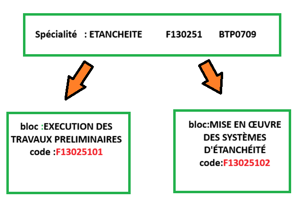

Organisation du RNFC
Fondamental : Synergie entre le RNFC et la NAME
Le RNFC agit en parfaite synergie avec la NAME, qui structure les métiers selon une arborescence sectorielle. Tandis que la NAME recense et cartographie les métiers existants, le RNFC apporte une réponse opérationnelle en définissant précisément les parcours de formation et les compétences requises pour maîtriser chaque spécialité professionnelle.
Parmi les objectifs essentiels du RNFC[1] figure la création d’un pont visible et efficace entre le système national de formation et le marché de l'emploi algérien, d'où la nécessité d'assurer un appariement entre le Référentiel National des Formations et des Compétences (RNFC) et la nomenclature nationale des métiers de l’emploi.
•Secteur d’activité → Domaine professionnel
•Domaine → Sous-domaine
•Sous-domaine → Spécialité (formation précise)
•Spécialité → Bloc de compétences
•Bloc de compétences → Compétence
NAME :
Secteur (A-P)
↓Domaine (A11)
↓ Sous-domaine (A1101)
↓ Appellations (métiers)
RNFC :
Secteur (A-P)
↓Domaine (A11)
↓ Sous-domaine (A1101)
↓ Appellations (métiers)
↓ Spécialité (A110101)
↓ bloc de compétences (A11010101)
Fiche de Specialite :
Définition : Bloc de Competences
Bloc de compétences : Ensemble structuré et cohérent de compétences, de connaissances et d’aptitudes mobilisables dans le cadre de l’exercice autonome d’une activité professionnelle. Il constitue une unité de certification identifiable, évaluable et validable de manière indépendante au sein d'un diplôme ou d'un titre professionnel.
Intérêts et avantages
La structure par blocs facilite la modularité des parcours et l'adaptation aux besoins du marché du travail :
-
Agilité professionnelle : Elle permet à une personne de faire reconnaître une partie de ses compétences sans forcément viser l'intégralité d'un diplôme, favorisant ainsi la mobilité et la reconversion.
-
Reconnaissance : Les blocs permettent de valider des acquis par étape, offrant un système de certification plus flexible et cumulable tout au long de la vie.
-
Lisibilité pour les employeurs : Ils fournissent des repères clairs sur les savoir-faire opérationnels possédés par un collaborateur, facilitant ainsi les recrutements et la gestion des plans de formation

Fiche Bloc de competences
Competence
Définition :
Une compétence se définit comme un « savoir-agir » complexe qui permet à une personne de mobiliser et de combiner efficacement des ressources variées (connaissances, savoir-faire, attitudes) pour accomplir une tâche ou résoudre un problème dans une situation donnée
Une compétence professionnelle est la capacité d'un individu à mobiliser et combiner un ensemble intégré de ressources (savoirs, savoir-faire, savoir-être) pour réaliser avec succès des activités spécifiques au sein d'un environnement de travail. Elle se mesure par la capacité à obtenir des résultats observables et conformes aux exigences d'une situation professionnelle
Compétences complémentaires Elles élargissent le champ d'action. Par exemple, un graphiste (cœur de métier) qui maîtrise le code HTML/CSS (compétence complémentaire) devient plus autonome pour intégrer ses propres designs sur le web
Le code d’une compétence professionnelle =le code nomenclature de la spécialité + Q + numéro de la compétence exemple BTP0709Q6
Pour une compétence complémentaire = le code nomenclature de la spécialité + C + numéro de la compétence exemple BTP0709C6
à chaque compétence correspond une mallette pédagogique qui est un document PDF contenant : une fiche de description de la compétence, une fiche modulaire et une fiche d'évaluation de la compétence